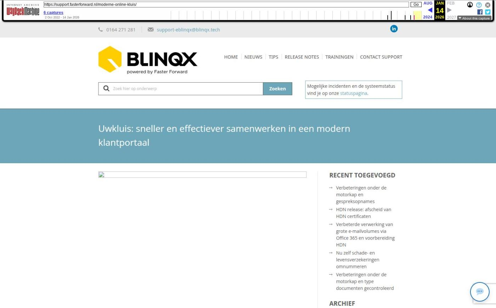

Uwkluis: sneller en effectiever samenwerken in een modern klantportaal

Tekstinhoud
Wil je veilig en efficiënt samenwerken met de klant om de hypotheekaanvraag zo snel mogelijk af te ronden? Dat kan vanaf nu met uwkluis: een online klantportaal dat verbonden is met Elements. Uwkluis is een modern alternatief voor de Digimap, ontwikkeld door De Nationale Hypotheekbond en Faster Forward.
Deze op maat ontwikkelde versie is verbonden met Elements voor optimale efficiëntie en gebruiksgemak voor hypotheekadviseurs. De kluis wordt speciaal ingericht voor jouw advieskantoor, en de consument kan zijn kluis niet meenemen naar een ander advieskantoor.
Impressies
Klantportaal van de toekomst
Geen zorgen over de veiligheid van data
Voordelen
Meer weten of direct aanvragen?
Impressies
Bekijk hier nog meer screenshots van uwkluis
Klantportaal van de toekomst
Met Uwkluis beschikt de klant over een modern klantportaal boordevol handige functies. Brondata aanleveren, digitaal ondertekenen en op de hoogte blijven: dit doen je klanten met speels gemak.
Bovendien ziet de klant direct welke berichten hij heeft ontvangen en welke openstaande acties er nog zijn. En dat allemaal in een vertrouwde omgeving, volledig in de huisstijl van je advieskantoor.
Documenten en gegevens delen
De klant uploadt eenvoudig zijn persoonlijke documenten zoals zijn paspoort, loonstrook en jaaropgave. Deze documenten komen in Elements automatisch in het juiste klantdossier en je krijgt een melding in je takenlijst. Bovendien worden documenten die in Elements zijn opgesteld, zoals een Opdracht tot Dienstverlening of Dienstverleningsdocument, digitaal door de klant geaccordeerd.
Via uwkluis is het daarnaast ook mogelijk om op een veilige en eenvoudige manier informatie en gegevens te delen met de klant. Zodra een document wordt goed- of afgekeurd, ziet de klant dit in zijn kluis.
Klant blijft up-to-date
Daarnaast kan je nieuwsberichten, e-mails en registraties tonen in de berichten inbox van de klant, zodat deze altijd op de hoogte is. Ook na de hypotheekaanvraag blijf je op deze manier de klant informeren. Zo speel je snel in op de behoefte van de klant. Ideaal voor kantoren die streven naar uitgebreide nazorg en klantonderhoud.
Persoonlijke berichten
Bovendien is het mogelijk om signalen uit PortefeuilleSignalen door te sturen naar Elements, waardoor deze direct worden getoond in de kluis van de bijbehorende klant. Zo geef je heel makkelijk persoonlijke aandacht met een relevant bericht. Denk hierbij aan klanten waarbij de rentevastperiode of looptijd van de hypotheek afloopt, of voor wie het interessant is om hun hypotheek over te sluiten.
Geen zorgen over de veiligheid van data
Dankzij de beveiligde en ISO gecertificeerde omgeving van de Nationale Hypotheekbond zijn alle gegevens veilig. Ook is er een mogelijkheid om een two-factor authentication toe te voegen, zodat de inlog van de klant extra beveiligd is.
Voordelen
Vertrouwde omgeving voor de klant
Veilig en efficiënt de hypotheekaanvraag afronden
Klant is altijd op de hoogte van nieuwe en lopende producten
Eenvoudig persoonlijke aandacht geven met (nieuws)berichten en campagnes
Klant ziet direct hoe hij zijn contactpersoon kan bereiken
Meer weten of direct aanvragen?
Heb je interesse? Vul onderstaand contactformulier in en De Nationale Hypotheekbond neemt zo snel mogelijk contact met je op om de mogelijkheden van uwkluis te laten zien.
Voor- en achternaam
Elements URL (bedrijfsnaam.fasterforwardelements.nl)
Je e-mailadres
Telefoonnummer (optioneel)
In dit artikel lees je in detail hoe je uwkluis vervolgens kunt gaan gebruiken.
Geplaatst op 14 november 2022 (Laatste update: 12 juni 2023)